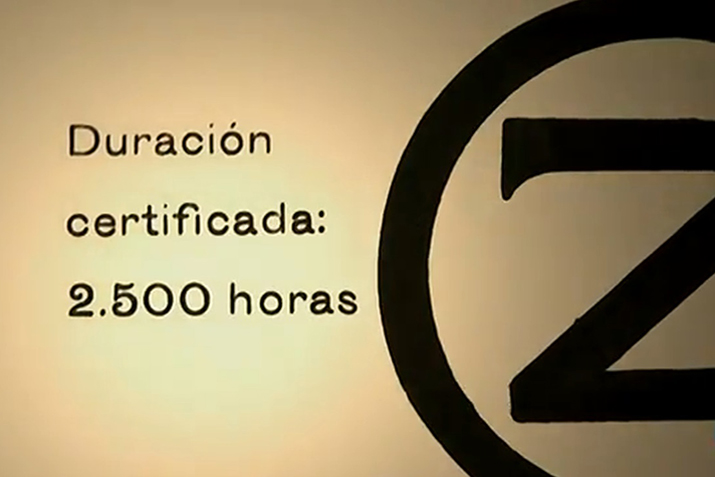
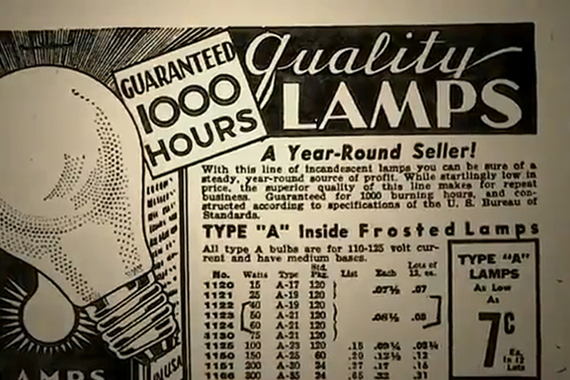
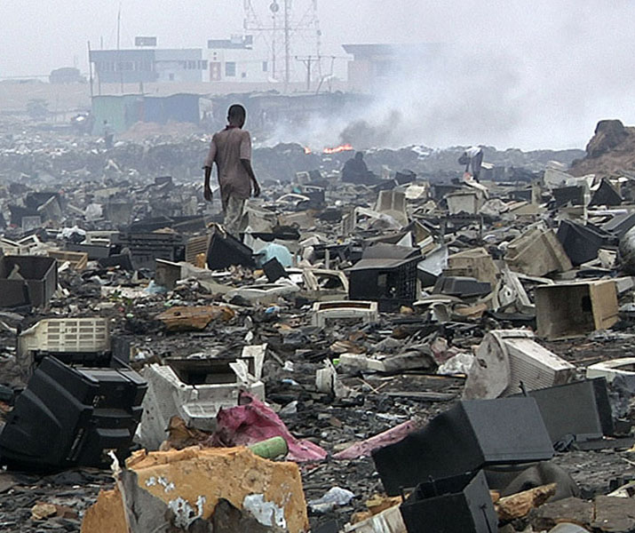
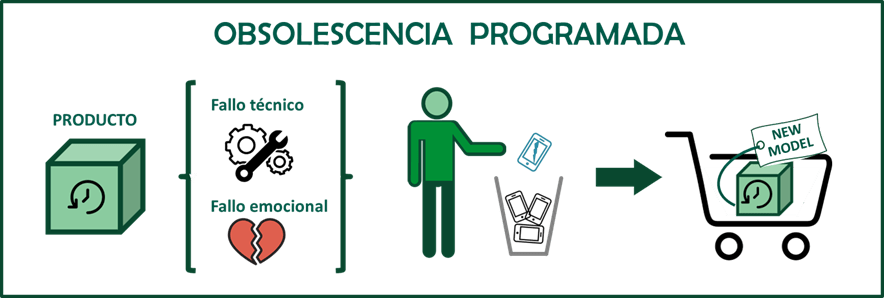
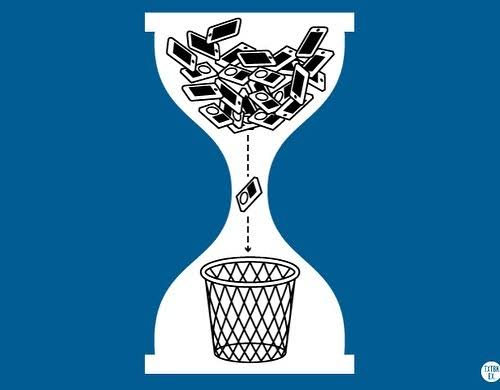
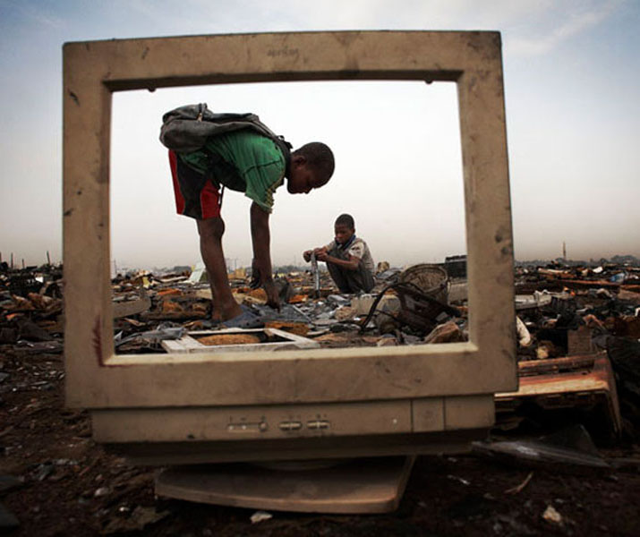

“Els productes que comprem podrien durar per a sempre, però no ho fan.”
Estació de Bombers número 6 de Livermore, EE UU. Aquí hi ha una bombeta de llum que porta funcionant sense pausa des del 1901, la Centennial Light(aquí es pot veure en directe).
El límit biològic d’edat per als éssers humans és d’uns 120 anys. Tenint en compte això, podem afirmar que si tots els productes duressin tant com aquesta bombeta, només hauríem de comprar un producte de cada tipus en tota la nostra vida, però com tots sabem, aquest no és el cas.
És aquesta bombeta especial d’alguna forma?
No. L’únic especial és que es va produir abans del 1924.
Fa 102 anys, a Ginebra, Suïssa, va tenir lloc una reunió secreta que canviaria la història de la economia per sempre: El Càrtel de Phoebus.
En aquesta, els directors executius de les empreses de bombetes més importants del món van acordar cooperar entre elles per regular l’oferta mundial de bombetes fent-les pitjor a posta.
Abans les bombetes tenien 2000 h de duració i n’hi havien que arribaven a les 3000. Actualment l’estàndard continua essent el fixat en aquell acord: 1000 h.
I la companyia que no cumplís l’acord era multada.


Abans del Càrtel de Phoebus
(1924)
Després del Càrtel de Phoebus
Època actual, 2003, el curtmetratge iPod’s Dirty Secret (el brut secret de iPod) revela per primer cop una queixa relacionada amb l’Obsolescència Programada.
Resulta ser que la bateria irreemplaçable dels iPods fallava, de forma precisa 18 mesos després de la seva compra. Per a llavors, el producte ja no comptava amb la garantia i la suggerència dels tècnics era “comprar-ne un de nou, perquè reparar l’antic era més car”.
Aquesta queixa, viral abans del naixement de les grans plataformes com YouTube va impulsar una denúncia col·lectiva contra Apple per Obsolescència Programada.
Però aquest no va ser l’únic cas que va afectar Apple, perquè un temps després va tornar a tenir problemes amb la llei per la mateixa pràctica, ja que resulta que el 2017, una actualització de iOS va provocar que els usuaris dels iPhones més antics tinguéssin aplicacions que anaven molt més lentes d’un dia per a l’altre o directament, s’apagués el dispositiu sense motiu.
Definició del problema:
L'obsolescència programada és una estratègia pròpia del model d'economia lineal que fomenta el consumisme, dissenyant productes d’una forma en la que aquests tenen una vida útil escurçada/limitada artificialment o amb un disseny que no prioritza/permet la reparabilitat ni l'actualització, fomentant:
Cicles de consum accelerats
L'obsolescència programada, combinada amb el màrqueting agressiu, fomenta la compra constant i efímera de productes per sobre de les necessitats reals de consum
Acumulació de residus i contaminació
Com que els productes no es dissenyen per ser reutilitzats, acaben acumulats en abocadors o cremats en incineradores. En el cas de la tecnologia, menys del 20% dels residus electrònics mundialment es reciclen de manera correcta
Cicles de consum accelerats: L'obsolescència programada, combinada amb el màrqueting agressiu, fomenta la compra constant i efímera de productes per sobre de les necessitats reals de consum
Acumulació de residus i contaminació: Com que els productes no es dissenyen per ser reutilitzats, acaben acumulats en abocadors o cremats en incineradores. En el cas de la tecnologia, menys del 20% dels residus electrònics mundialment es reciclen de manera correcta

L’algorisme de l’obsolescència programada
Un aparell electrònic d'ús habitual falla.
Quan el portem a reparar, el servei tècnic li diu que resulta més rendible comprar-ne un nou que arreglar-ho. El preu de la mà d'obra, les peces espatllades i el muntatge costen més que adquirir-ne un nou.
L'usuari rebutja el producte avariat i en compra un de nou.

Això ocorre en tot tipus de components digitals (sobretot relacionats amb la informàtica): ordinadors, impressores, les unitats de disc òptic, monitors LCD…
L’entorn més habitual de l’obsolescència programada en el seu actual: els components electrònics.


Més enllà de l’electrònica
Però l’obsolescència programada només afecta a productes d’electrònica?
NO.
Obsolescència biològica: la vida té data de caducitat
Companyies com Monsanto an creat llavors genèticament modificades que es tornen estèrils una vegada que han donat la primera o segona collita, les anomenades llavors “Terminator” produïdes mitjançant la tecnologia GURT (acrònim anglès de Grup de Tecnologies de Restricció d'Ús), trobant un rebuig per part d'autoritats i agricultors, per ser un tipus de contracte obligat fent completament dependent als agricultors de l'empresa per a tornar a sembrar, i també pels perills ja que les llavors estèrils en la segona generació podrien contaminar a altres plantes en barrejar-se i la següent generació serien plantes híbrides absolutament estèrils, cosa que podria ser utilitzada com a bioterrorisme.
Obsolescència de medicaments: la salut té data de caducitat
La majoria de medicaments conté components químics la vida útil dels quals és limitada; no obstant això, alguns laboratoris redueixen la data de caducitat dels fàrmacs que produeixen amb la finalitat d'obtenir majors guanys en el negoci de la salut, ocasionant que els pacients rebutgen medicaments suposadament caducats per a adquirir altres nous.
El fi de l'Obsolescència
Llençar béns de consum reparables té un gran impacte ambiental: cada any, només a la Unió Europea es genera l’equivalent a:
261 milions de tones d’emissions de CO₂
30 milions de tones de recursos consumits
35 milions de tones de residus
La pèrdua econòmica dels consumidors que opten per substituir un producte en lloc de reparar-lo és d’uns 12.000 milions d’euros anuals, quan, segons un estudi de la Comissió Europea, el 77 % dels ciutadans de la Unió Europea preferiria reparar un producte abans que comprar-ne un de nou.
Arrel aquesta situació, a partir del 18 de febrer de 2027, la nova normativa de la Unió Europea (Reglament (UE) 2023/1542) obligarà al fet que els telèfons mòbils i dispositius portàtils venuts a la UE tinguin bateries que els usuaris puguin extreure i substituir fàcilment:
Fàcil substitució
La bateria ha de poder retirar-se usant eines comercialment disponibles (o que el fabricant proporcioni sense cost si requereix alguna específica)
Adéu a les coles
Queda prohibit l'ús de calor o dissolvents fortes per a desmuntar el dispositiu
Sense traves de programari
El sistema operatiu no podrà bloquejar, limitar o penalitzar al mòbil si s'instal·la una bateria nova fos d'un servei tècnic oficial
Recanvis garantits
Els fabricants estan obligats a vendre bateries de recanvi durant almenys 5 anys després de retirar el model del mercat, a un preu raonable i no discriminatori
En un intent de redirecció cap a una economia més circular.


.jpg)